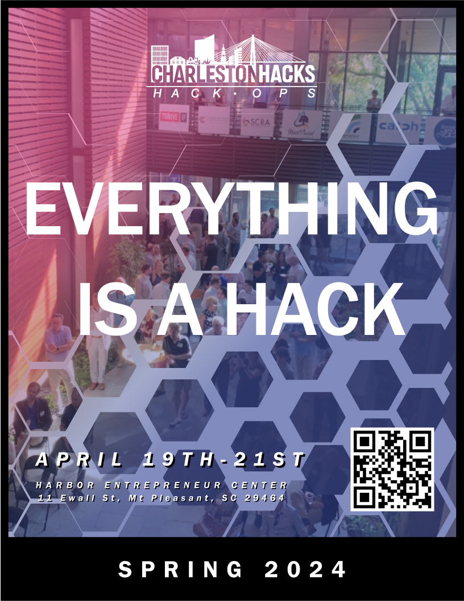

First place · HarthHaven
An application helping seniors find suitable living communities.

Event archive
Maslow’s Hierarchy of Needs
April 19–21, 2024 · Harbor Entrepreneur Center
62 registrants formed four teams, with projects evaluated by nine judges.
An application helping seniors find suitable living communities.
A dashboard connecting homeowners, volunteers and master gardeners to grow food, with most produce distributed through local food banks.
A health and wellness app built using Squarespace.
“I developed this idea with my own mother in mind—wanting to make it easier for her to navigate senior living options. Through this process, I learned how to flesh out my ideas into an executable concept that a small-scale team could develop. It has been both fun and challenging.” — Kei Cheng
Select an image to view the original.